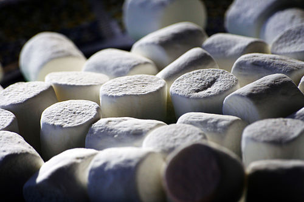

Confectioners in early 19th century France pioneered the innovation of whipping up the marshmallow sap and sweetening it, to make a confection similar to modern marshmallow. The confection was made locally, however, by the owners of small sweet shops. They would extract the sap from the mallow plant's root, and whip it themselves. The candy was very popular, but its manufacture was labour-intensive. In the late 19th century, French manufacturers thought of using egg whites or gelatin, combined with modified corn starch, to create the chewy base. This avoided the labour-intensive extraction process, but it did require industrial methods to combine the gelatin and corn starch in the right way.
